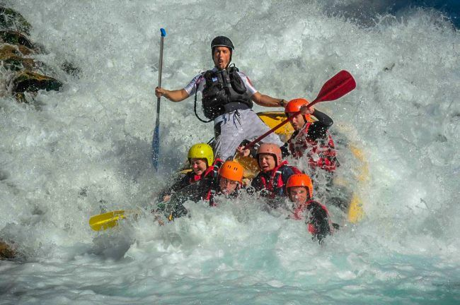

Les sports en eaux vives !
Traditionnellement structurés autour de la discipline du canoë-kayak et de la fédération
sportive du même nom, les sports d’eau vive ont diversifié, depuis les années 60-70,
tant leurs publics, en s’ouvrant à des pratiquants non fédérés, autonomes ou clients de
prestataires, que leurs disciplines, avec l’apparition du rafting, de la nage en eau vive,
du canyonisme ou, plus récemment, de la randonnée aquatique et de sa variante le
ruisselling. Ils se sont largement développés sur le territoire, proposant une offre
associative et surtout commerciale tournée vers un public en recherche de
« naturalité » et de sensations. Les sports d’eau vive se sont structurés dans quelques
départements en une véritable filière économique, s’appuyant sur une demande en
augmentation tout particulièrement pour leurs formes les plus ludiques, praticables en
famille sur les sites les plus faciles d’accès

Types de sports en eaux vives
Le rafting
Envie de sensations ? Embarquez à bord d’un raft, une embarcation gonflable pouvant accueillir 5 à 10 coéquipiers. Chacun est équipé d’une pagaie et aide à diriger l’embarcation sur les flots tumultueux en suivant avec attention les indications du « barreur », soit le capitaine à bord.
Le canyoning
Le canyoning, à ne pas confondre avec le canoë, est aussi l’un des sports d’eaux vives phares de l’été. Cette activité consiste à descendre une rivière en alternant des passages de randonnée, de nage, de glissade sur des toboggans naturels et parfois d’escalade. Les participants sont souvent amenés à passer par des gorges, des ravins, des cascades… en bref des sites naturels tous plus beaux les uns que les autres. Cette activité ludique, qui se pratique généralement dans des régions montagneuses, plaira aux amateurs de défi sportif en quête d’aventure.
Il existe des parcours de différents niveaux. Les plus jeunes (souvent à partir de 6 ans) comme les grands pourront donc s’y adonner.
Le tubing
Moins connu que d’autres sports d’été à pratiquer en eaux vives, le tubing n’en est pas moins ludique et amusant. Il consiste à affronter le courant tout en étant assis(e) sur un gros coussin gonflable dont la forme rappelle celle d’un donut. Chacun est muni d’une pagaie pour se diriger dans l’eau. Le tubing s’adapte aussi bien aux amateurs de balade détente qu’aux amoureux des sensations.
L’hydrospeed
L’hydrospeed, aussi appelé nage en eaux vives, est un sport qui consiste à nager dans une rivière à l’aide d’un flotteur sur lequel doit reposer la partie supérieure du corps. L’objectif est d’essayer de surfer sur les vagues. Quelle que soit l’habilité de chacun, cette activité rime souvent avec amusement et l’apprentissage est aisé.